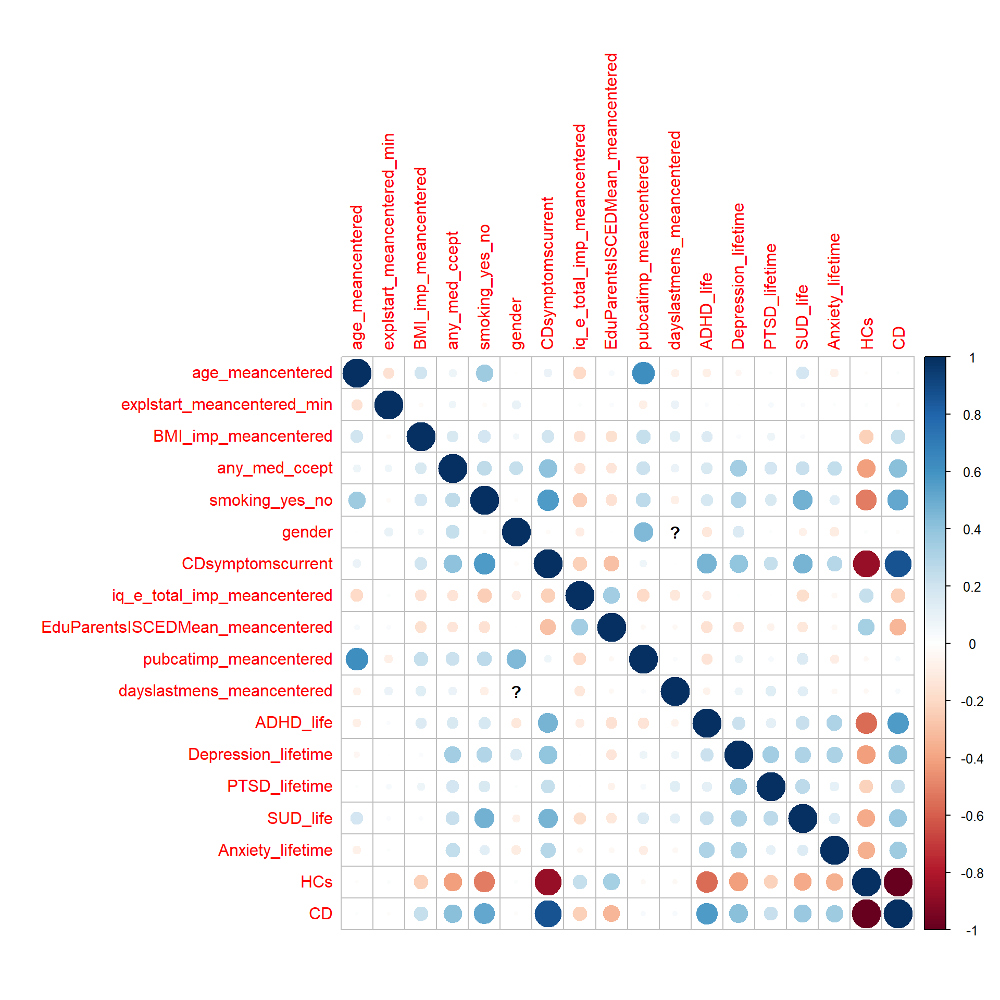

TSST LMM
AGC
15 4 2021
Last updated: 2021-04-16
Checks: 7 0
Knit directory: TSST_Analysis/
This reproducible R Markdown analysis was created with workflowr (version 1.6.2). The Checks tab describes the reproducibility checks that were applied when the results were created. The Past versions tab lists the development history.
Great! Since the R Markdown file has been committed to the Git repository, you know the exact version of the code that produced these results.
Great job! The global environment was empty. Objects defined in the global environment can affect the analysis in your R Markdown file in unknown ways. For reproduciblity it’s best to always run the code in an empty environment.
The command set.seed(20210415) was run prior to running the code in the R Markdown file. Setting a seed ensures that any results that rely on randomness, e.g. subsampling or permutations, are reproducible.
Great job! Recording the operating system, R version, and package versions is critical for reproducibility.
Nice! There were no cached chunks for this analysis, so you can be confident that you successfully produced the results during this run.
Great job! Using relative paths to the files within your workflowr project makes it easier to run your code on other machines.
Great! You are using Git for version control. Tracking code development and connecting the code version to the results is critical for reproducibility.
The results in this page were generated with repository version 4678e60. See the Past versions tab to see a history of the changes made to the R Markdown and HTML files.
Note that you need to be careful to ensure that all relevant files for the analysis have been committed to Git prior to generating the results (you can use wflow_publish or wflow_git_commit). workflowr only checks the R Markdown file, but you know if there are other scripts or data files that it depends on. Below is the status of the Git repository when the results were generated:
Ignored files:
Ignored: .Rproj.user/
Untracked files:
Untracked: data/13.04.2021_290_170_CORTAUCsplit.sav
Note that any generated files, e.g. HTML, png, CSS, etc., are not included in this status report because it is ok for generated content to have uncommitted changes.
There are no past versions. Publish this analysis with wflow_publish() to start tracking its development.
Prepare
Definitions
IV of interest :
- Gruppe (“group”)
- sex (“gender”)
- Zeitpunkt (“Time”) with polynomes (as many as possible)
- Gruppe x Zeitpunkt(each poly)
- Gruppe x sex
IV of no interest :
- Site (“centre”)
- Age scaled (“age_meancentered”)
- “explstart_meancentered_min”
- “BMI_imp_meancentered”
- “any_med_ccept”
- “smoking_yes_no”
DV:
- psychologischer Stress („stressed“)
- Cortisol („CORT“)
- Testosteron („TEST”)
- Oxytocin (OXT”) ## read and check data
df = as.data.frame(read_sav(paste0(home,"/data/13.04.2021_290_170_CORTAUCsplit.sav")))
df$group = drop(factor(df$group, levels = c(1,2), labels=c("CD", "CTRL"))) %>% relevel(., ref="CTRL")
df$centre = drop(factor(df$centre, levels = c(1,2,3,4,5), labels=c("Frankfurt", "Aachen",
"Amsterdam", "SouthHampton", "Basel")))
df$any_med_ccept = drop(factor(df$any_med_ccept, levels = c(0,1),
labels=c("no_med", "med")))%>% relevel(., ref="no_med")
df$smoking_yes_no = drop(factor(df$smoking_yes_no, levels = c(0,1),
labels=c("no_smk", "smk")))%>% relevel(., ref="no_smk")
df$gender = drop(factor(df$gender, levels = c(1,2),
labels=c("female", "male")))%>% relevel(., ref="male")
table(df$group, useNA = "always")
CTRL CD <NA>
160 130 0 table(df$centre, useNA = "always")
Frankfurt Aachen Amsterdam SouthHampton Basel <NA>
144 21 29 56 40 0 table(df$any_med_ccept, useNA = "always")
no_med med <NA>
218 72 0 table(df$smoking_yes_no, useNA = "always")
no_smk smk <NA>
198 92 0 table(df$gender, useNA = "always")
male female <NA>
104 186 0 UV = c("centre","age_meancentered", "explstart_meancentered_min",
"BMI_imp_meancentered", "any_med_ccept", "smoking_yes_no", "gender", "group")
AV = list(
AV_stressed = c(stressed_1=0, stressed_2=2,
stressed_3=7, stressed_4=8,
stressed_5=18, stressed_6=33,
stressed_7=48, stressed_8=63),
AV_CORT = c(CORT_BL_log=0, CORT_10_log=10, CORT_25_log=25, CORT_40_log=40, CORT_55_log=55) ,
AV_TEST = c(TEST_BL_log=0, TEST_10_log=10, TEST_55_log=55),
AV_OXT = c(OXT_BL_log=0, OXT_1_log=1, OXT_10_log=10) )
models=list(
AV_stressed = "DV~1+age_meancentered+explstart_meancentered_min+BMI_imp_meancentered+any_med_ccept+smoking_yes_no+gender+group+value+gender*group+value*group+gender*value*group+(1|twuid)+(1|centre)",
AV_CORT = "DV~1+age_meancentered+explstart_meancentered_min+BMI_imp_meancentered+any_med_ccept+smoking_yes_no+gender+group+value+gender*group+value*group+gender*value*group+(1|twuid) + (1|centre)",
AV_TEST = "DV~1+age_meancentered+explstart_meancentered_min+BMI_imp_meancentered+any_med_ccept+smoking_yes_no+gender+group+value+gender*group+value*group+gender*value*group+(1|twuid) + (1|centre)",
AV_OXT = "DV~1+age_meancentered+explstart_meancentered_min+BMI_imp_meancentered+any_med_ccept+smoking_yes_no+gender+group+value+gender*group+value*group+gender*value*group+(1|twuid) + (1|centre)")
# do not include site in correlation plot
tmpframe = df[,UV[!UV%in% c("centre")]] %>% mutate_if(is.factor, function(x) as.numeric(x)-1)
corrplot::corrplot(cor(tmpframe, use = "pairwise"))
complete cohort descriptives
res = compareGroups(group~., data = df[,UV])
#summary(res)
export_table <- createTable(res)
export_table
--------Summary descriptives table by 'group'---------
______________________________________________________________
CTRL CD p.overall
N=160 N=130
¯¯¯¯¯¯¯¯¯¯¯¯¯¯¯¯¯¯¯¯¯¯¯¯¯¯¯¯¯¯¯¯¯¯¯¯¯¯¯¯¯¯¯¯¯¯¯¯¯¯¯¯¯¯¯¯¯¯¯¯¯¯
centre: 0.013
Frankfurt 81 (50.6%) 63 (48.5%)
Aachen 5 (3.12%) 16 (12.3%)
Amsterdam 14 (8.75%) 15 (11.5%)
SouthHampton 32 (20.0%) 24 (18.5%)
Basel 28 (17.5%) 12 (9.23%)
age_meancentered -0.03 (2.07) 0.01 (1.78) 0.853
explstart_meancentered_min 1.66 (53.5) -0.05 (55.5) 0.791
BMI_imp_meancentered -0.98 (3.79) 1.31 (5.77) <0.001
any_med_ccept: <0.001
no_med 146 (91.2%) 72 (55.4%)
med 14 (8.75%) 58 (44.6%)
smoking_yes_no: <0.001
no_smk 144 (90.0%) 54 (41.5%)
smk 16 (10.0%) 76 (58.5%)
gender: 0.829
male 56 (35.0%) 48 (36.9%)
female 104 (65.0%) 82 (63.1%)
¯¯¯¯¯¯¯¯¯¯¯¯¯¯¯¯¯¯¯¯¯¯¯¯¯¯¯¯¯¯¯¯¯¯¯¯¯¯¯¯¯¯¯¯¯¯¯¯¯¯¯¯¯¯¯¯¯¯¯¯¯¯ male only cohort descriptives
res = compareGroups(group~., data = df[,UV], subset = gender=="male")
export_table <- createTable(res)
export_table
--------Summary descriptives table by 'group'---------
_______________________________________________________________
CTRL CD p.overall
N=56 N=48
¯¯¯¯¯¯¯¯¯¯¯¯¯¯¯¯¯¯¯¯¯¯¯¯¯¯¯¯¯¯¯¯¯¯¯¯¯¯¯¯¯¯¯¯¯¯¯¯¯¯¯¯¯¯¯¯¯¯¯¯¯¯¯
centre: 0.452
Frankfurt 32 (57.1%) 34 (70.8%)
Aachen 3 (5.36%) 3 (6.25%)
SouthHampton 16 (28.6%) 8 (16.7%)
Basel 5 (8.93%) 3 (6.25%)
age_meancentered 0.16 (2.06) -0.17 (2.13) 0.422
explstart_meancentered_min -10.88 (51.4) -0.88 (51.6) 0.326
BMI_imp_meancentered -0.82 (3.55) 0.33 (4.03) 0.128
any_med_ccept: 0.015
no_med 54 (96.4%) 38 (79.2%)
med 2 (3.57%) 10 (20.8%)
smoking_yes_no: <0.001
no_smk 47 (83.9%) 23 (47.9%)
smk 9 (16.1%) 25 (52.1%)
gender: male 56 (100%) 48 (100%) .
¯¯¯¯¯¯¯¯¯¯¯¯¯¯¯¯¯¯¯¯¯¯¯¯¯¯¯¯¯¯¯¯¯¯¯¯¯¯¯¯¯¯¯¯¯¯¯¯¯¯¯¯¯¯¯¯¯¯¯¯¯¯¯ female only cohort descriptives
res = compareGroups(group~., data = df[,UV], subset = gender=="female")
export_table <- createTable(res)
export_table
--------Summary descriptives table by 'group'---------
_____________________________________________________________
CTRL CD p.overall
N=104 N=82
¯¯¯¯¯¯¯¯¯¯¯¯¯¯¯¯¯¯¯¯¯¯¯¯¯¯¯¯¯¯¯¯¯¯¯¯¯¯¯¯¯¯¯¯¯¯¯¯¯¯¯¯¯¯¯¯¯¯¯¯¯
centre: 0.002
Frankfurt 49 (47.1%) 29 (35.4%)
Aachen 2 (1.92%) 13 (15.9%)
Amsterdam 14 (13.5%) 15 (18.3%)
SouthHampton 16 (15.4%) 16 (19.5%)
Basel 23 (22.1%) 9 (11.0%)
age_meancentered -0.13 (2.07) 0.12 (1.54) 0.342
explstart_meancentered_min 8.40 (53.6) 0.43 (58.0) 0.337
BMI_imp_meancentered -1.07 (3.92) 1.89 (6.54) <0.001
any_med_ccept: <0.001
no_med 92 (88.5%) 34 (41.5%)
med 12 (11.5%) 48 (58.5%)
smoking_yes_no: <0.001
no_smk 97 (93.3%) 31 (37.8%)
smk 7 (6.73%) 51 (62.2%)
gender: female 104 (100%) 82 (100%) .
¯¯¯¯¯¯¯¯¯¯¯¯¯¯¯¯¯¯¯¯¯¯¯¯¯¯¯¯¯¯¯¯¯¯¯¯¯¯¯¯¯¯¯¯¯¯¯¯¯¯¯¯¯¯¯¯¯¯¯¯¯ linear model with mixed effects
We adapted a boxed design by individual over Time
resall = list()
for (depvar in names(AV)){
cols = names(AV[[depvar]])
long = df[,c("twuid",cols, UV)] %>%
gather(key = "value", value = "DV", all_of(cols))
long2 = long%>% mutate_if(is.numeric, scale)
long2$Time = AV[[depvar]][long2$value]
long2$value =as.factor(long2$value) %>%
relevel(., ref=grep("BL|stressed_1", unique(long2$value),value = T))
long2$twuid = as.factor(long2$twuid)
model.lme = lme4::lmer(models[[depvar]], data=long2)
model.lme0 = lme4::lmer(DV~1+(1|twuid), data=long2)
anovah0 = anova(model.lme0, model.lme)
model_p_val = anovah0$`Pr(>Chisq)`[2]
Res = summary(model.lme)
resall[[depvar]] = model.lme
resall[[paste0(depvar,"_longdat")]] = long2
res.coeff = as.data.frame(Res$coefficients)
res.coeff$pvalue = pt(abs(res.coeff$"t value"), 1000000, lower.tail = F) * 2
resall[[paste0(depvar,"_coeff")]]=res.coeff
resall[[paste0(depvar,"_modsig")]]=model_p_val
}boundary (singular) fit: see ?isSingularrefitting model(s) with ML (instead of REML)
refitting model(s) with ML (instead of REML)
refitting model(s) with ML (instead of REML)boundary (singular) fit: see ?isSingularrefitting model(s) with ML (instead of REML)Results
stressed
full models: DV~1+age_meancentered+explstart_meancentered_min+BMI_imp_meancentered+any_med_ccept+smoking_yes_no+gender+group+value+gendergroup+valuegroup+gendervaluegroup+(1|twuid)+(1|centre)
h0 model: DV~1+(1|twuid)):
overall model p-value:3.82e-154
tableplot = function (x){
x %>% dplyr::mutate_if(is.numeric, function(x){as.character(signif(x, 3))}) %>% kbl() %>% kable_classic()
}
depvar = "AV_stressed"
resall[[paste0(depvar, "_coeff")]] %>% tableplot()| Estimate | Std. Error | t value | pvalue | |
|---|---|---|---|---|
| (Intercept) | -0.273 | 0.121 | -2.26 | 0.024 |
| age_meancentered | 0.00996 | 0.042 | 0.237 | 0.813 |
| explstart_meancentered_min | -0.022 | 0.0381 | -0.578 | 0.564 |
| BMI_imp_meancentered | 0.0535 | 0.0393 | 1.36 | 0.173 |
| any_med_cceptmed | 0.0773 | 0.1 | 0.77 | 0.441 |
| smoking_yes_nosmk | 0.0829 | 0.103 | 0.805 | 0.421 |
| genderfemale | 0.127 | 0.149 | 0.853 | 0.393 |
| groupCD | 0.153 | 0.181 | 0.842 | 0.4 |
| valuestressed_2 | 0.572 | 0.127 | 4.5 | 6.73e-06 |
| valuestressed_3 | 0.932 | 0.127 | 7.33 | 2.24e-13 |
| valuestressed_4 | 0.124 | 0.127 | 0.972 | 0.331 |
| valuestressed_5 | -0.162 | 0.127 | -1.28 | 0.202 |
| valuestressed_6 | -0.232 | 0.127 | -1.82 | 0.068 |
| valuestressed_7 | -0.26 | 0.127 | -2.04 | 0.0411 |
| valuestressed_8 | -0.274 | 0.127 | -2.16 | 0.031 |
| genderfemale:groupCD | -0.151 | 0.223 | -0.677 | 0.498 |
| groupCD:valuestressed_2 | 0.00885 | 0.187 | 0.0473 | 0.962 |
| groupCD:valuestressed_3 | -0.253 | 0.187 | -1.35 | 0.177 |
| groupCD:valuestressed_4 | 0.035 | 0.187 | 0.187 | 0.852 |
| groupCD:valuestressed_5 | -0.0448 | 0.187 | -0.24 | 0.811 |
| groupCD:valuestressed_6 | 0.112 | 0.187 | 0.6 | 0.548 |
| groupCD:valuestressed_7 | 0.078 | 0.187 | 0.417 | 0.677 |
| groupCD:valuestressed_8 | 0.0722 | 0.187 | 0.386 | 0.699 |
| genderfemale:valuestressed_2 | 0.261 | 0.158 | 1.65 | 0.0984 |
| genderfemale:valuestressed_3 | -0.102 | 0.158 | -0.648 | 0.517 |
| genderfemale:valuestressed_4 | 0.0976 | 0.158 | 0.619 | 0.536 |
| genderfemale:valuestressed_5 | -0.0947 | 0.158 | -0.601 | 0.548 |
| genderfemale:valuestressed_6 | -0.0523 | 0.158 | -0.332 | 0.74 |
| genderfemale:valuestressed_7 | -0.0709 | 0.158 | -0.449 | 0.653 |
| genderfemale:valuestressed_8 | -0.0575 | 0.158 | -0.365 | 0.715 |
| genderfemale:groupCD:valuestressed_2 | 0.138 | 0.234 | 0.59 | 0.555 |
| genderfemale:groupCD:valuestressed_3 | 0.485 | 0.234 | 2.07 | 0.0381 |
| genderfemale:groupCD:valuestressed_4 | -0.00994 | 0.234 | -0.0425 | 0.966 |
| genderfemale:groupCD:valuestressed_5 | 0.173 | 0.234 | 0.738 | 0.461 |
| genderfemale:groupCD:valuestressed_6 | 0.0939 | 0.234 | 0.402 | 0.688 |
| genderfemale:groupCD:valuestressed_7 | 0.0404 | 0.234 | 0.173 | 0.863 |
| genderfemale:groupCD:valuestressed_8 | 0.0344 | 0.234 | 0.147 | 0.883 |
ggplot(data = resall[[paste0(depvar, "_longdat")]],
aes(DV, group=Time, col=Time)) +
ylab("density") + xlab(paste("zscores",depvar))+
geom_density()
ggplot(data = resall[[paste0(depvar, "_longdat")]],
aes(Time,DV, col=group)) +
ylab(depvar) + xlab("Time")+
geom_smooth(method = 'loess') + geom_point() + facet_wrap(~gender)`geom_smooth()` using formula 'y ~ x'
CORT
full models: DV~1+age_meancentered+explstart_meancentered_min+BMI_imp_meancentered+any_med_ccept+smoking_yes_no+gender+group+value+gendergroup+valuegroup+gendervaluegroup+(1|twuid) + (1|centre)
h0 model: DV~1+(1|twuid)):
overall model p-value:1.17e-70
depvar = "AV_CORT"
resall[[paste0(depvar, "_coeff")]] %>% tableplot()| Estimate | Std. Error | t value | pvalue | |
|---|---|---|---|---|
| (Intercept) | -0.0674 | 0.129 | -0.524 | 0.6 |
| age_meancentered | 0.239 | 0.0513 | 4.65 | 3.25e-06 |
| explstart_meancentered_min | -0.177 | 0.0461 | -3.85 | 0.000116 |
| BMI_imp_meancentered | 0.049 | 0.0473 | 1.04 | 0.301 |
| any_med_cceptmed | -0.021 | 0.122 | -0.172 | 0.863 |
| smoking_yes_nosmk | -0.106 | 0.125 | -0.846 | 0.397 |
| genderfemale | -0.303 | 0.151 | -2.01 | 0.0446 |
| groupCD | 0.0402 | 0.185 | 0.218 | 0.828 |
| valueCORT_10_log | 0.733 | 0.0997 | 7.35 | 1.93e-13 |
| valueCORT_25_log | 0.444 | 0.0997 | 4.46 | 8.28e-06 |
| valueCORT_40_log | 0.184 | 0.0997 | 1.85 | 0.0643 |
| valueCORT_55_log | 0.176 | 0.0997 | 1.77 | 0.0767 |
| genderfemale:groupCD | 0.211 | 0.226 | 0.934 | 0.351 |
| groupCD:valueCORT_10_log | -0.763 | 0.147 | -5.2 | 2.03e-07 |
| groupCD:valueCORT_25_log | -0.631 | 0.147 | -4.3 | 1.71e-05 |
| groupCD:valueCORT_40_log | -0.4 | 0.147 | -2.73 | 0.00641 |
| groupCD:valueCORT_55_log | -0.48 | 0.147 | -3.27 | 0.00106 |
| genderfemale:valueCORT_10_log | 0.405 | 0.124 | 3.27 | 0.00106 |
| genderfemale:valueCORT_25_log | 0.36 | 0.124 | 2.91 | 0.00356 |
| genderfemale:valueCORT_40_log | 0.345 | 0.124 | 2.79 | 0.00521 |
| genderfemale:valueCORT_55_log | 0.0525 | 0.124 | 0.425 | 0.671 |
| genderfemale:groupCD:valueCORT_10_log | -0.356 | 0.183 | -1.94 | 0.0523 |
| genderfemale:groupCD:valueCORT_25_log | -0.211 | 0.183 | -1.15 | 0.25 |
| genderfemale:groupCD:valueCORT_40_log | -0.263 | 0.183 | -1.43 | 0.152 |
| genderfemale:groupCD:valueCORT_55_log | 0.032 | 0.183 | 0.175 | 0.861 |
ggplot(data = resall[[paste0(depvar, "_longdat")]],
aes(DV, group=Time, col=Time)) +
ylab("density") + xlab(depvar)+
geom_density()
ggplot(data = resall[[paste0(depvar, "_longdat")]],
aes(Time,DV, col=group)) +
ylab(depvar) + xlab("Time")+
geom_smooth(method = 'loess') + geom_point()+ facet_wrap(~gender)`geom_smooth()` using formula 'y ~ x'
TEST
full models: DV~1+age_meancentered+explstart_meancentered_min+BMI_imp_meancentered+any_med_ccept+smoking_yes_no+gender+group+value+gendergroup+valuegroup+gendervaluegroup+(1|twuid) + (1|centre)
h0 model: DV~1+(1|twuid)):
overall model p-value: 1.14e-35
depvar = "AV_TEST"
resall[[paste0(depvar, "_coeff")]] %>% tableplot()| Estimate | Std. Error | t value | pvalue | |
|---|---|---|---|---|
| (Intercept) | 0.377 | 0.16 | 2.36 | 0.0183 |
| age_meancentered | 0.238 | 0.0546 | 4.35 | 1.34e-05 |
| explstart_meancentered_min | -0.18 | 0.0482 | -3.74 | 0.000186 |
| BMI_imp_meancentered | 0.17 | 0.0491 | 3.45 | 0.000552 |
| any_med_cceptmed | -0.207 | 0.128 | -1.62 | 0.105 |
| smoking_yes_nosmk | 0.162 | 0.132 | 1.23 | 0.219 |
| genderfemale | -0.674 | 0.143 | -4.72 | 2.36e-06 |
| groupCD | 0.0889 | 0.174 | 0.512 | 0.609 |
| valueTEST_10_log | 0.206 | 0.0611 | 3.36 | 0.000766 |
| valueTEST_55_log | 0.203 | 0.0611 | 3.32 | 0.000887 |
| genderfemale:groupCD | -0.0218 | 0.213 | -0.103 | 0.918 |
| groupCD:valueTEST_10_log | -0.118 | 0.0899 | -1.31 | 0.19 |
| groupCD:valueTEST_55_log | -0.193 | 0.0899 | -2.14 | 0.032 |
| genderfemale:valueTEST_10_log | 0.194 | 0.0758 | 2.56 | 0.0104 |
| genderfemale:valueTEST_55_log | -0.114 | 0.0758 | -1.5 | 0.132 |
| genderfemale:groupCD:valueTEST_10_log | -0.247 | 0.112 | -2.2 | 0.0277 |
| genderfemale:groupCD:valueTEST_55_log | 0.116 | 0.112 | 1.03 | 0.303 |
ggplot(data = resall[[paste0(depvar, "_longdat")]],
aes(DV, group=Time, col=Time)) +
ylab("density") + xlab(depvar)+
geom_density()
ggplot(data = resall[[paste0(depvar, "_longdat")]],
aes(Time,DV, col=group)) +
ylab(depvar) + xlab("Time")+
geom_smooth(method = 'loess') + geom_point()+ facet_wrap(~gender)`geom_smooth()` using formula 'y ~ x'
OXT
full models: DV~1+age_meancentered+explstart_meancentered_min+BMI_imp_meancentered+any_med_ccept+smoking_yes_no+gender+group+value+gendergroup+valuegroup+gendervaluegroup+(1|twuid) + (1|centre)
h0 model: DV~1+(1|twuid)):
overall model p-value: 0.000784
depvar = "AV_OXT"
resall[[paste0(depvar, "_coeff")]] %>% tableplot()| Estimate | Std. Error | t value | pvalue | |
|---|---|---|---|---|
| (Intercept) | -0.322 | 0.16 | -2.01 | 0.044 |
| age_meancentered | 0.0933 | 0.0781 | 1.19 | 0.232 |
| explstart_meancentered_min | 0.0142 | 0.0933 | 0.153 | 0.879 |
| BMI_imp_meancentered | -0.0846 | 0.0647 | -1.31 | 0.191 |
| any_med_cceptmed | 0.0183 | 0.176 | 0.104 | 0.917 |
| smoking_yes_nosmk | 0.185 | 0.187 | 0.987 | 0.323 |
| genderfemale | 0.299 | 0.212 | 1.41 | 0.157 |
| groupCD | -0.236 | 0.242 | -0.977 | 0.329 |
| valueOXT_1_log | 0.405 | 0.122 | 3.32 | 0.000906 |
| valueOXT_10_log | 0.181 | 0.122 | 1.49 | 0.137 |
| genderfemale:groupCD | 0.222 | 0.317 | 0.701 | 0.483 |
| groupCD:valueOXT_1_log | -0.239 | 0.18 | -1.33 | 0.184 |
| groupCD:valueOXT_10_log | 0.169 | 0.18 | 0.939 | 0.348 |
| genderfemale:valueOXT_1_log | -0.108 | 0.165 | -0.652 | 0.514 |
| genderfemale:valueOXT_10_log | 0.00515 | 0.165 | 0.0312 | 0.975 |
| genderfemale:groupCD:valueOXT_1_log | 0.0108 | 0.242 | 0.0446 | 0.964 |
| genderfemale:groupCD:valueOXT_10_log | -0.115 | 0.242 | -0.476 | 0.634 |
ggplot(data = resall[[paste0(depvar, "_longdat")]],
aes(DV, group=Time, col=Time)) +
ylab("density") + xlab(depvar)+
geom_density()
ggplot(data = resall[[paste0(depvar, "_longdat")]],
aes(Time,DV, col=group)) +
ylab(depvar) + xlab("Time")+
geom_smooth(method = 'loess') + geom_point()+ facet_wrap(~gender)`geom_smooth()` using formula 'y ~ x'
sessionInfo()R version 4.0.4 (2021-02-15)
Platform: x86_64-w64-mingw32/x64 (64-bit)
Running under: Windows 10 x64 (build 18363)
Matrix products: default
locale:
[1] LC_COLLATE=German_Germany.1252 LC_CTYPE=German_Germany.1252
[3] LC_MONETARY=German_Germany.1252 LC_NUMERIC=C
[5] LC_TIME=German_Germany.1252
attached base packages:
[1] stats graphics grDevices utils datasets methods base
other attached packages:
[1] compareGroups_4.5.1 caret_6.0-86 lattice_0.20-41
[4] kableExtra_1.3.4 lme4_1.1-26 Matrix_1.3-2
[7] data.table_1.14.0 forcats_0.5.1 stringr_1.4.0
[10] dplyr_1.0.5 purrr_0.3.4 readr_1.4.0
[13] tidyr_1.1.3 tibble_3.1.0 ggplot2_3.3.3
[16] tidyverse_1.3.0 haven_2.3.1 workflowr_1.6.2
loaded via a namespace (and not attached):
[1] minqa_1.2.4 colorspace_2.0-0 ellipsis_0.3.1
[4] class_7.3-18 rprojroot_2.0.2 flextable_0.6.4
[7] base64enc_0.1-3 fs_1.5.0 rstudioapi_0.13
[10] mice_3.13.0 farver_2.1.0 prodlim_2019.11.13
[13] fansi_0.4.2 lubridate_1.7.10 xml2_1.3.2
[16] codetools_0.2-18 splines_4.0.4 knitr_1.31
[19] jsonlite_1.7.2 nloptr_1.2.2.2 pROC_1.17.0.1
[22] broom_0.7.5 dbplyr_2.1.0 compiler_4.0.4
[25] httr_1.4.2 backports_1.2.1 assertthat_0.2.1
[28] cli_2.3.1 later_1.1.0.1 htmltools_0.5.1.1
[31] tools_4.0.4 gtable_0.3.0 glue_1.4.2
[34] reshape2_1.4.4 Rcpp_1.0.6 cellranger_1.1.0
[37] jquerylib_0.1.3 vctrs_0.3.6 writexl_1.3.1
[40] svglite_2.0.0 nlme_3.1-152 iterators_1.0.13
[43] timeDate_3043.102 xfun_0.21 gower_0.2.2
[46] ps_1.6.0 rvest_1.0.0 lifecycle_1.0.0
[49] statmod_1.4.35 MASS_7.3-53.1 scales_1.1.1
[52] ipred_0.9-11 hms_1.0.0 promises_1.2.0.1
[55] parallel_4.0.4 HardyWeinberg_1.7.1 yaml_2.2.1
[58] gdtools_0.2.3 sass_0.3.1 rpart_4.1-15
[61] stringi_1.5.3 highr_0.8 corrplot_0.84
[64] foreach_1.5.1 zip_2.1.1 boot_1.3-27
[67] truncnorm_1.0-8 lava_1.6.9 chron_2.3-56
[70] rlang_0.4.10 pkgconfig_2.0.3 systemfonts_1.0.1
[73] Rsolnp_1.16 evaluate_0.14 labeling_0.4.2
[76] recipes_0.1.15 tidyselect_1.1.0 plyr_1.8.6
[79] magrittr_2.0.1 R6_2.5.0 generics_0.1.0
[82] DBI_1.1.1 mgcv_1.8-34 pillar_1.5.1
[85] withr_2.4.1 survival_3.2-9 nnet_7.3-15
[88] modelr_0.1.8 crayon_1.4.1 uuid_0.1-4
[91] utf8_1.1.4 officer_0.3.17 rmarkdown_2.7
[94] grid_4.0.4 readxl_1.3.1 git2r_0.28.0
[97] ModelMetrics_1.2.2.2 reprex_1.0.0 digest_0.6.27
[100] webshot_0.5.2 httpuv_1.5.5 stats4_4.0.4
[103] munsell_0.5.0 viridisLite_0.3.0 bslib_0.2.4